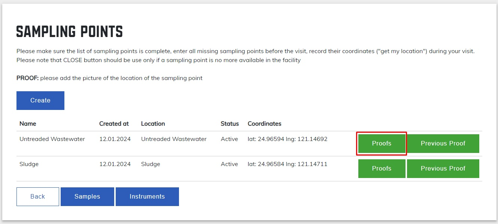
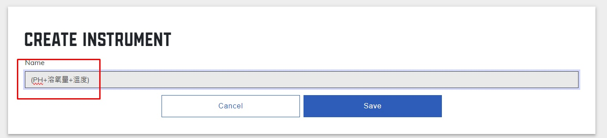
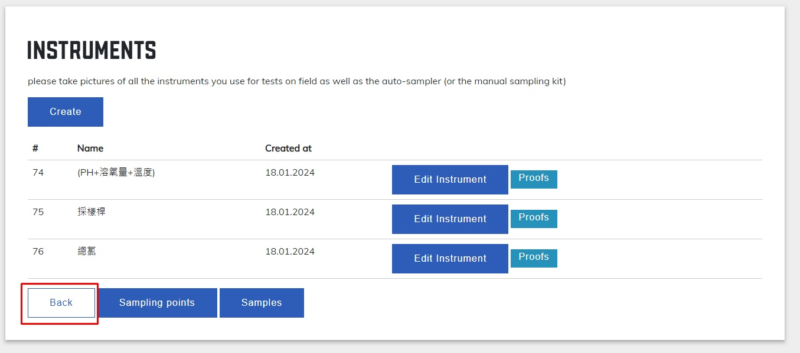
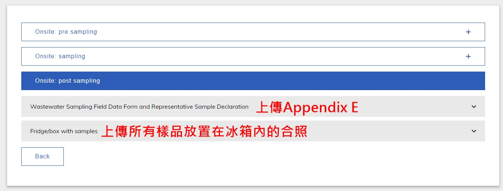

工作流程:
出發前必上傳:
申請書
空瓶&工具合照
確認工廠排放量&排放方式,並填寫
可以回來再上傳:
採樣點&GPS照片
水桶裝滿水樣的照片
土樣照片
採樣工具照片
現場測試儀器照片(可以上傳PH和總氯兩台儀器正在測量的照片)
大門照片
樣品分裝+採樣工具+測試儀器大合照
所有樣品裝在冰箱的照片
Appendix E 表格
操作流程說明:
step1: Start Project
step2: 填寫工廠排放方式 & 排放量
step3: 開始流程 Sampling Pre-Visit
step4: 上傳Pre-Visit所需要文件 & 照片
圖片中未提及部分直接點擊Completed即可
step5: 點擊Completed 進入下一步驟
step6: 開始流程 Sampling on Site
step7: 建立採樣點
step8: 點擊Create 創建採樣點
step9: 填寫採樣點資料
step10: 點擊Proof 上傳採樣點照片
(採樣點遠近照 & GPS照片)

step11: 點擊Samples, 進入下一步驟
step12: 點擊Create 創建樣品(水或土樣)
step13: 選擇之前創立的採樣點,並未在該採樣點取得的樣品命名
step14: 建立完樣品後,點擊Proofs Sample上傳照片
照片應包含:
水樣=>20L容器裝滿樣品的照片
土樣=>採集土樣後,樣品的照片
step15: 點擊Instruments,進入下一個步驟
step16: 點擊Create,創立採樣或測試工具
step17: 命名採樣工具或測試儀器

step18: 點擊Proofs上傳工具或儀器的照片
這個部分就是平常我們採樣會用到的工具(如採樣桿),或是現場測量的儀器(如測量PH或總氯的儀器),照片要拍攝正在取樣,或正在測試的照片
step19: 點擊Back,回到首頁

step20: 點擊Continue,上傳所需文件,以完成步驟Sampling on site
step21: 上傳Sampling on site所需文件
圖片中未提及部分直接點擊Completed即可
